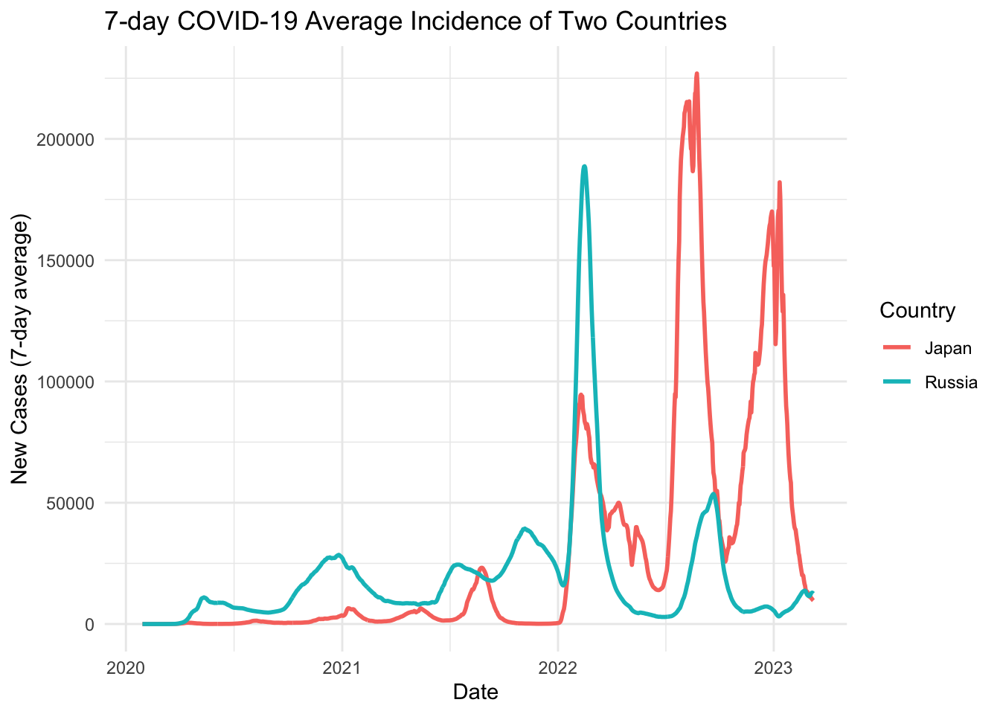
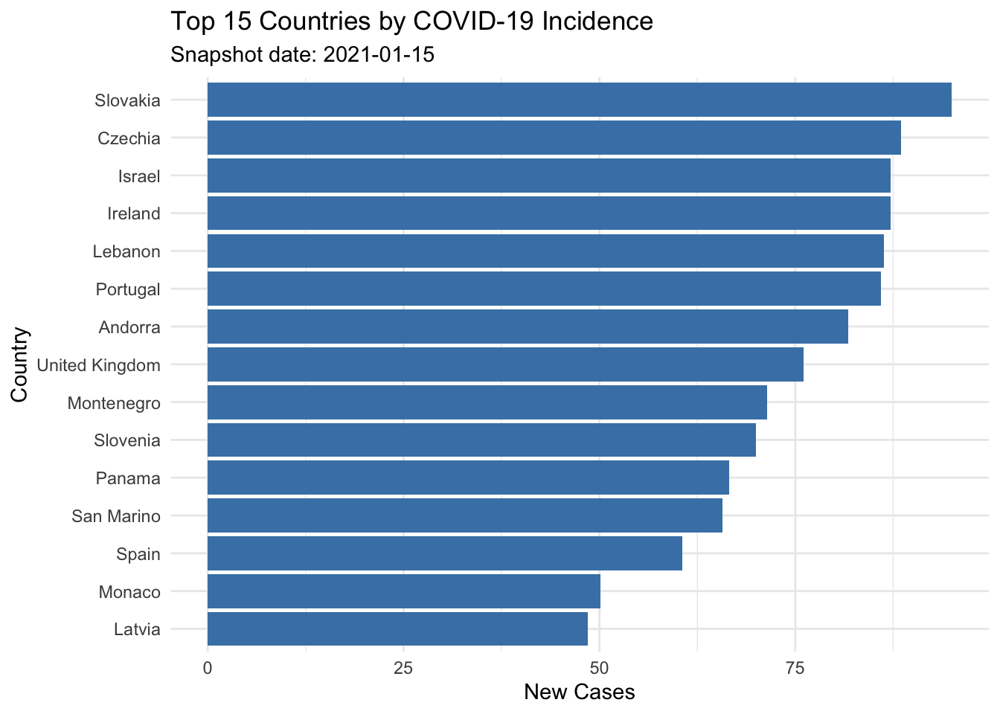

library(dplyr)
library(gt)
library(ggplot2)
library(tidyr)
library(gtsummary)
library(arsenal)
library(lubridate)
library(stringr)
library(zoo)
library(scales)
library(countrycode)
covidconfirm <-read.csv("/Users/apple/Desktop/me/WCM/semester/fall1/datasci1/week3/class6/homework2/JHU-COVID/time_series_covid19_confirmed_global.csv")
coviddeath <-read.csv("/Users/apple/Desktop/me/WCM/semester/fall1/datasci1/week3/class6/homework2/JHU-COVID/time_series_covid19_deaths_global.csv")
#head(covidconfirm)jhucovid19_code
COVID-19: Tidy the time series (tidyr + dplyr)
Use the two JHU CSVs (confirmed + deaths). Work at the country/region level.
Import & reshape
Pivot both wide time series to long over date columns. Convert date columns (strings) to Date. Standardize country names (trim spaces; treat “Korea, South” vs “South Korea”).
############################# confirm ####################################
#Pivot both wide time series to long over date columns.
covidconfirm_long <- covidconfirm %>%
pivot_longer(
cols = starts_with("X"), #choose cols
names_to = "date", #name col to store the date
values_to = "number_confirmed" #name col to store the values
)
head(covidconfirm_long)# A tibble: 6 × 6
Province.State Country.Region Lat Long date number_confirmed
<chr> <chr> <dbl> <dbl> <chr> <dbl>
1 <NA> Afghanistan 33.9 67.7 X1.22.20 0
2 <NA> Afghanistan 33.9 67.7 X1.23.20 0
3 <NA> Afghanistan 33.9 67.7 X1.24.20 0
4 <NA> Afghanistan 33.9 67.7 X1.25.20 0
5 <NA> Afghanistan 33.9 67.7 X1.26.20 0
6 <NA> Afghanistan 33.9 67.7 X1.27.20 0#Convert date columns (strings) to Date.
#remove X at the start
covidconfirm_clean<-covidconfirm_long %>%
mutate(date = stringr::str_remove(date, "^X")) %>%
#separate y\m\d into different cols
#create new cols
separate(date, into = c("mm","dd","yy"), sep = "\\.", #need \\ to use .
#convert into numeric
convert = TRUE, extra = "merge") %>%
mutate(year = 2000 + yy,
date = make_date(year, mm, dd))%>%
# select the cols
select(Province.State, Country.Region, Lat, Long, date, number_confirmed) %>%
#Standardize country names (trim spaces; treat “Korea, South” vs “South Korea” if present).
#change the name
mutate(
Country_Region = str_trim(Country.Region), #remove space
#modify country colname
Country_Region = case_when(
Country_Region %in% c("Korea, South", "South Korea") ~ "South Korea",
Country_Region %in% c("Korea, North", "North Korea") ~ "North Korea",
TRUE ~ Country_Region
)
) %>%
select(-Country.Region)
#covidconfirm_clean############################# death ####################################
coviddeath_long <- coviddeath %>%
pivot_longer(
cols = starts_with("X"), #choose cols
names_to = "date", #name col to store the date
values_to = "number_death" #name col to store the values
)
#remove X at the start
covideath_clean<-coviddeath_long %>%
mutate(date = stringr::str_remove(date, "^X")) %>%
#separate y\m\d into different cols
#create new cols
separate(date, into = c("mm","dd","yy"), sep = "\\.", #need \\ to use .
#convert into numeric
convert = TRUE, extra = "merge") %>%
mutate(year = 2000 + yy,
date = make_date(year, mm, dd))%>%
# select tghe cols
select(Province.State, Country.Region, Lat, Long, date, number_death) %>%
#change the name
mutate(
Country_Region = str_trim(Country.Region), #remove space
#modify country colname
Country_Region = case_when(
Country_Region %in% c("Korea, South", "South Korea") ~ "South Korea",
Country_Region %in% c("Korea, North", "North Korea") ~ "North Korea",
TRUE ~ Country_Region
)
) %>%
select(-Country.Region)
#covideath_cleanAggregate
Aggregate to country-date (sum across provinces). Verify no double-counting
############################# confirm ################################
#Aggregate to country-date (sum across provinces). Verify no double-counting.
#aggregate
covid_confirm_country_date <- covidconfirm_clean %>%
group_by(Country_Region, date) %>% #group by country and region
summarise(
total_confirmed = sum(number_confirmed, na.rm = TRUE), #sum
province_count = n() #This number is for further validation
) %>%
ungroup()
#filter(covid_confirm_country_date,Country_Region=="China")
############################# death ####################################
covid_death_country_date <- covideath_clean %>%
group_by(Country_Region, date) %>% #group by country and region
summarise(
total_death = sum(number_death, na.rm = TRUE), #sum
province_count = n() #This number is for further validation
) %>%
ungroup()Daily increments
Compute new cases and new deaths by countries Replace small negative blips with NA (data rectifications)
############################# confirm ################################
covid_confirm_country_date_new <- covid_confirm_country_date %>%
arrange(Country_Region, date) %>%
group_by(Country_Region) %>%
mutate(
new_confirmed = total_confirmed - lag(total_confirmed), # daily increment
new_confirmed = ifelse(new_confirmed < 0, NA, new_confirmed) # replace negatives with NA
) %>%
ungroup()
#covid_confirm_country_date_new
#head(filter(covid_confirm_country_date_new,Country_Region=="China"))
############################# death ################################
covid_death_country_date_new <- covid_death_country_date %>%
arrange(Country_Region, date) %>%
group_by(Country_Region) %>%
mutate(
new_death = total_death - lag(total_death), # daily increment
new_death = ifelse(new_death < 0, NA, new_death) # replace negatives with NA
) %>%
ungroup()7-day average
#####Compute 7-day average new cases and new death
#Compute 7-day average new cases and new death
############################# confirm ################################
covid_confirm_country_date_avg <- covid_confirm_country_date_new %>%
group_by(Country_Region) %>%
arrange(date) %>%
mutate(
new_confirmed_7day = rollmean(new_confirmed, k = 7, fill = NA, align = "right")#7 days
) %>%
ungroup()
#head(filter(covid_death_country_date_avg,Country_Region=="China"),15)
############################# death ################################
covid_death_country_date_avg <- covid_death_country_date_new %>%
group_by(Country_Region) %>%
arrange(date) %>%
mutate(
new_death_7day = rollmean(new_death, k = 7, fill = NA, align = "right")
) %>%
ungroup()
covid_confirm_country_date_avg# A tibble: 229,743 × 6
Country_Region date total_confirmed province_count new_confirmed
<chr> <date> <dbl> <int> <dbl>
1 Afghanistan 2020-01-22 0 1 NA
2 Albania 2020-01-22 0 1 NA
3 Algeria 2020-01-22 0 1 NA
4 Andorra 2020-01-22 0 1 NA
5 Angola 2020-01-22 0 1 NA
6 Antarctica 2020-01-22 0 1 NA
7 Antigua and Barbuda 2020-01-22 0 1 NA
8 Argentina 2020-01-22 0 1 NA
9 Armenia 2020-01-22 0 1 NA
10 Australia 2020-01-22 0 8 NA
# ℹ 229,733 more rows
# ℹ 1 more variable: new_confirmed_7day <dbl>Peaks
For each country, find the top 2 peaks (dates and values) separately for new cases and new deaths, using the variables names: new_cases_ma7 and new_deaths_ma7 .
Return a table showing the top 10 countries ranked by maximum incidence. Pick two countries from the top-10 list and plot new_cases_ma7 over time (lines, diferent colors, labeled legend, sensible date breaks).
#name new variables
covid_confirm_country_date_avg <- covid_confirm_country_date_avg %>%
rename(new_cases_ma7 = new_confirmed_7day)
covid_death_country_date_avg <- covid_death_country_date_avg %>%
rename(new_deaths_ma7 = new_death_7day)
covid_country_date <- covid_confirm_country_date_avg %>%
left_join(
covid_death_country_date_avg %>%
select(Country_Region, date, new_deaths_ma7),
by = c("Country_Region", "date")
)
#top2 peaks of the incidence of each country
peaks_cases <- covid_country_date %>%
group_by(Country_Region) %>%
arrange(desc(new_cases_ma7)) %>%
slice_head(n = 2) %>%
mutate(type = "cases")
#top2 peaks of the death cases of each country
peaks_deaths <- covid_country_date %>%
group_by(Country_Region) %>%
arrange(desc(new_deaths_ma7)) %>%
slice_head(n = 2) %>%
mutate(type = "deaths")
#bind
peaks_all <- bind_rows(peaks_cases, peaks_deaths) %>%
ungroup()
top10_countries <- covid_country_date %>%
group_by(Country_Region) %>%
summarise(max_incidence = max(new_cases_ma7, na.rm = TRUE)) %>%
arrange(desc(max_incidence)) %>%
slice_head(n = 10)
#top10_countries
plot_data <- covid_country_date %>%
filter(Country_Region %in% c("Japan", "Russia"))
ggplot(plot_data, aes(x = date, y = new_cases_ma7, color = Country_Region)) +
geom_line(size = 1) +
labs(
title = "7-day COVID-19 Average Incidence of Two Countries ",
x = "Date",
y = "New Cases (7-day average)",
color = "Country"
) +
theme_minimal()
Japan and Russia show very different epidemic patterns over time. Russia experienced earlier and more frequent peaks in 2020–2021, with a large surge in late 2021, followed by a sharp decline. Japan, by contrast, had relatively low incidence until mid-2022, when it saw very large and prolonged waves, peaking much higher than Russia. This suggests that the timing and scale of COVID-19 waves varied substantially between the two countries, likely reflecting differences in outbreak timing, interventions, and variant spread.
COVID-19: Summary tables (gtsummary)
Pick a snapshot date. Create continent labels with countrycode.
gtsummary Table 1
Build a summary table using tbl_summary stratified by continent for new_cases_ma7 and new_deaths_ma7 (continuous) and a high-incidence flag (categorical).
The high-incidence is defined as above overall qunatile level 0.75. (Hint: use countrycode package to extract continent)
Use type = “continuous2” for two-line stats (mean (SD) + median [IQR]); add overall counts, p-values, and clearly labeled units.
#choose a date
coviddate<-as.Date("2021-01-06")
covid_data<-covid_country_date %>%
filter(date ==coviddate)
# use countrycode package to extract continent
covid_data_code<-covid_data%>%
mutate(
continent=countrycode(sourcevar=Country_Region,
origin="country.name",
destination="continent")
)
q75<-quantile(covid_data_code$new_cases_ma7, 0.75, na.rm = TRUE)
#above overall quantile level 0.75.
covid_snapshot<-covid_data_code%>%
mutate(
high_incidence=ifelse(new_cases_ma7>q75,"High","Low/Medium")
)
library(gtsummary)
#summary(covid_snapshot)
ex1 <-covid_snapshot %>%
dplyr::select(continent, new_cases_ma7, new_deaths_ma7, high_incidence) %>%
tbl_summary(by =continent)6 missing rows in the "continent" column have been removed.ex2<-covid_snapshot%>%
dplyr::select(continent, new_cases_ma7, new_deaths_ma7, high_incidence) %>%
tbl_summary(
by=continent,
type=list(new_cases_ma7~"continuous2",new_deaths_ma7~"continuous2"),
statistic=list(
all_continuous() ~ c("{mean} ({sd})",
"{median} [{p25}, {p75}]"),
all_categorical() ~ "{n} / {N} ({p}%)"
),
label=list(
new_cases_ma7~"New Cases",
new_deaths_ma7~"New Deaths",
high_incidence ~ "High Incidence"
),
digits = list(all_continuous() ~ 1 )
) %>%
add_overall() %>%
add_p() %>%
modify_caption("**COVID-19 Snapshot on 2021-01-06 by Continent**")6 missing rows in the "continent" column have been removed.#packageVersion("gtsummary")
#ex2Efect sizes
Add a difference column comparing Europe vs Americas using add_difference. For continuous variables, set 2 significant figures, for categorical variables, set 1 decimal. (Hint: use style_sigfig and style_percent ).
Hint: Pay attention to NAs. Ensure the by column (here continent) has exactly two levels afer filtering. Use droplevels() (or forcats::fct_drop ) to remove lefover factor level
#Europe vs Americas
ex3 <- covid_snapshot %>%
filter(continent %in% c("Europe", "Americas")) %>%
droplevels() %>%
select(continent, new_cases_ma7, new_deaths_ma7, high_incidence) %>%
tbl_summary(
by = continent,
type = list(
new_cases_ma7 ~ "continuous2",
new_deaths_ma7 ~ "continuous2"
),
statistic = list(
all_continuous() ~ c("{mean} ({sd})", "{median} [{p25}, {p75}]"),
all_categorical() ~ "{n} / {N} ({p}%)"
),
label = list(
new_cases_ma7 ~ "New Cases (7-day avg)",
new_deaths_ma7 ~ "New Deaths (7-day avg)",
high_incidence ~ "High Incidence"
),
missing = "no"
) %>%
#difference(Europe vs Americas)
add_difference(
test = list(
all_continuous() ~ "t.test",
all_categorical() ~ "chisq.test"
),
estimate_fun = list(
all_continuous() ~ function(x) style_sigfig(x, digits = 2),
all_categorical() ~ function(x) style_percent(x, digits = 1)
)
) %>%
modify_caption("**COVID-19 Europe vs Americas: Effect Sizes**")
ex3| Characteristic | Americas N = 351 |
Europe N = 441 |
Difference2 | 95% CI2 | p-value2 |
|---|---|---|---|---|---|
| New Cases (7-day avg) | 4,121 | -9,854, 18,097 | 0.6 | ||
| Mean (SD) | 9,314 (39,858) | 5,192 (9,873) | |||
| Median [Q1, Q3] | 255 [13, 1,646] | 1,729 [389, 6,297] | |||
| New Deaths (7-day avg) | 39 | -133, 211 | 0.7 | ||
| Mean (SD) | 144 (478) | 105 (185) | |||
| Median [Q1, Q3] | 3 [0, 44] | 37 [5, 99] | |||
| High Incidence | |||||
| High | 10 / 35 (29%) | 24 / 44 (55%) | |||
| Low/Medium | 25 / 35 (71%) | 20 / 44 (45%) | |||
| Abbreviation: CI = Confidence Interval | |||||
| 1 n / N (%) | |||||
| 2 Welch Two Sample t-test | |||||
##Join with OWID metadata: per-capita analysis and plot
From OWID, keep: iso_code`, location (country), continent, and population. Remove duplicates. Show glimpse() of these 4 columns.
#read csv
owid_covid_url <- "https://raw.githubusercontent.com/owid/covid-19-data/master/public/data/owid-covid-data.csv"
owid_covid <- read.csv(owid_covid_url, stringsAsFactors = FALSE, check.names = FALSE)
owid_covid_clean<-owid_covid%>%
select(iso_code, location, continent,population)%>%
distinct() #remove duplicates
glimpse(owid_covid_clean)Rows: 255
Columns: 4
$ iso_code <chr> "AFG", "OWID_AFR", "ALB", "DZA", "ASM", "AND", "AGO", "AIA"…
$ location <chr> "Afghanistan", "Africa", "Albania", "Algeria", "American Sa…
$ continent <chr> "Asia", "", "Europe", "Africa", "Oceania", "Europe", "Afric…
$ population <dbl> 41128772, 1426736614, 2842318, 44903228, 44295, 79843, 3558…Check unmatched countries the tidy JHU dataset has country names.
Use anti_join() both ways to find unmatched names between JHU and OWID. Show the first 5 rows of each. Write 1 bullet. Hint: use anti_join
jhu_not_in_owid <- covid_country_date %>%
anti_join(owid_covid_clean, c("Country_Region" = "location"))
#different col names need c()
owid_not_in_jhu <- owid_covid_clean %>%
anti_join(covid_country_date, by = c( "location"="Country_Region"))
head(jhu_not_in_owid, 5)# A tibble: 5 × 7
Country_Region date total_confirmed province_count new_confirmed
<chr> <date> <dbl> <int> <dbl>
1 Antarctica 2020-01-22 0 1 NA
2 Burma 2020-01-22 0 1 NA
3 Cabo Verde 2020-01-22 0 1 NA
4 Congo (Brazzaville) 2020-01-22 0 1 NA
5 Congo (Kinshasa) 2020-01-22 0 1 NA
# ℹ 2 more variables: new_cases_ma7 <dbl>, new_deaths_ma7 <dbl>head(owid_not_in_jhu, 5) iso_code location continent population
1 OWID_AFR Africa 1426736614
2 ASM American Samoa Oceania 44295
3 AIA Anguilla North America 15877
4 ABW Aruba North America 106459
5 OWID_ASI Asia 4721383370The unmatched country names are mainly due to naming differences.For example, “Burma” (JHU) vs “Myanmar” (OWID), “Cabo Verde” (JHU) vs “Cape Verde” (OWID), “Congo (Brazzaville)” (JHU) vs “Republic of Congo” (OWID), and “Congo (Kinshasa)” (JHU) vs “Democratic Republic of Congo” (OWID).
- Join + compute per-capita rates (8 pts) lef_join() JHU tidy data with OWID metadata. Compute: cases_per100k : cumulative confirmed cases per 100,000 population. new_cases_ma7_per100k : 7-day average of new cases per 100,000 population. Show the first 3 rows (country, date, population, confirmed, new_cases_ma7_per100k ).
summary(owid_covid_clean) iso_code location continent population
Length:255 Length:255 Length:255 Min. :4.700e+01
Class :character Class :character Class :character 1st Qu.:4.864e+05
Mode :character Mode :character Mode :character Median :5.643e+06
Mean :1.270e+08
3rd Qu.:2.823e+07
Max. :7.975e+09 covid_joined<-covid_country_date %>%
left_join(owid_covid_clean,by =c("Country_Region"="location")) %>%
mutate(
cases_per100k=total_confirmed/population*100000,
new_cases_ma7_per100k=new_cases_ma7/population*100000
)
covid_joined_show<-select(covid_joined,Country_Region, date, population, total_confirmed, new_cases_ma7_per100k)
#summary(covid_joined)
head(covid_joined_show, 3)# A tibble: 3 × 5
Country_Region date population total_confirmed new_cases_ma7_per100k
<chr> <date> <dbl> <dbl> <dbl>
1 Afghanistan 2020-01-22 41128772 0 NA
2 Albania 2020-01-22 2842318 0 NA
3 Algeria 2020-01-22 44903228 0 NA#summary(covid_joined$date)
#summary(covid_snapshot$date)Snapshot ranking
Pick snapshot_date <- as.Date(“2021-01-15”) . Find the top 15 countries by new_cases_ma7_per100k . - Show that 15-row table (country, continent, population, new_cases_ma7_per100k rounded to 1 decimal).
str(covid_joined$date) Date[1:229743], format: "2020-01-22" "2020-01-22" "2020-01-22" "2020-01-22" "2020-01-22" ...unique(head(covid_joined$date, 10))#validate the same date type[1] "2020-01-22"snapshot_date <- as.Date("2021-01-15")
top15_snapshot <- covid_joined %>%
filter(date == snapshot_date) %>%
arrange(desc(new_cases_ma7_per100k)) %>%
select(Country_Region, continent, population, new_cases_ma7_per100k) %>%
# rounded to 1 decimal
mutate(new_cases_ma7_per100k = round(new_cases_ma7_per100k, 1)) %>%
slice_head(n = 15)
top15_snapshot# A tibble: 15 × 4
Country_Region continent population new_cases_ma7_per100k
<chr> <chr> <dbl> <dbl>
1 Slovakia Europe 5643455 95
2 Czechia Europe 10493990 88.5
3 Israel Asia 9449000 87.2
4 Ireland Europe 5023108 87.2
5 Lebanon Asia 5489744 86.3
6 Portugal Europe 10270857 85.9
7 Andorra Europe 79843 81.8
8 United Kingdom Europe 67508936 76.1
9 Montenegro Europe 627082 71.4
10 Slovenia Europe 2119843 70
11 Panama North America 4408582 66.6
12 San Marino Europe 33690 65.7
13 Spain Europe 47558632 60.6
14 Monaco Europe 36491 50.1
15 Latvia Europe 1850654 48.5Plot
Bar chart of these top 15 countries sorted descending by new_cases_ma7_per100k . Rotate x-axis labels for readability; subtitle should include the date
g<-ggplot(top15_snapshot,aes(x=reorder(Country_Region,new_cases_ma7_per100k), y =new_cases_ma7_per100k)) +
geom_col(fill = "steelblue") +
coord_flip() + #Rotate x-axis labels
labs(
title = "Top 15 Countries by COVID-19 Incidence",
#subtitle should include the date.
subtitle = paste("Snapshot date:", snapshot_date),
x = "Country",
y = "New Cases"
) +
theme_minimal()
g